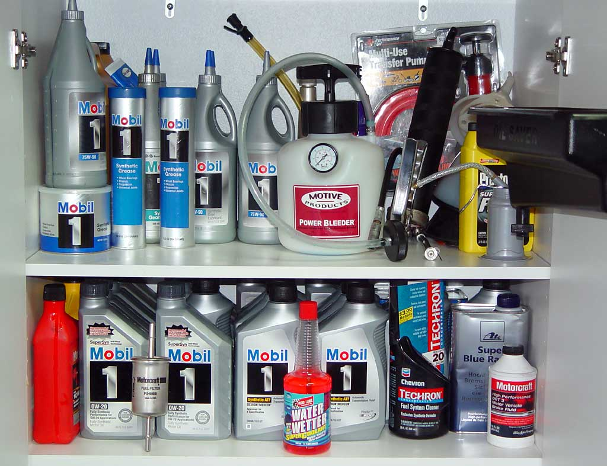

|
Lubes |
|
"Which oil?" "Which ATF?"
"Which gear lube?"
These questions are among the most frequently -- and needlessly -- asked questions by newbies to the Lightning boards. The truth is, if you use the right viscosity and change the fluids frequently, it really doesn't matter which brand of anything you use. Here is what I use:  From top to bottom, left to right:
Oil: You want 0W-20. Use any oil that you want, change it every 3,000 miles, and you will never have an oil-related failure. Synthetics just provide a tiny bit more HP and MPG. Anything else said on the subject is just mindless chatter. Transmission fluid: Use any Mercon (NOT Mercon V) ATF that you want, change it every 20,000 miles or so, and you will never have a fluid-related failure. Gear oil: Forget the tag on the diff cover. Forget the owner's manual. Forget the SVT supplement. Forget anything you read on the Lightning boards. The correct gear oil is 75W-90. This is straight from SVT. End of story. Use a transfer pump like the one in the top right background for easier fills. Brake fluid: See here for more info. |